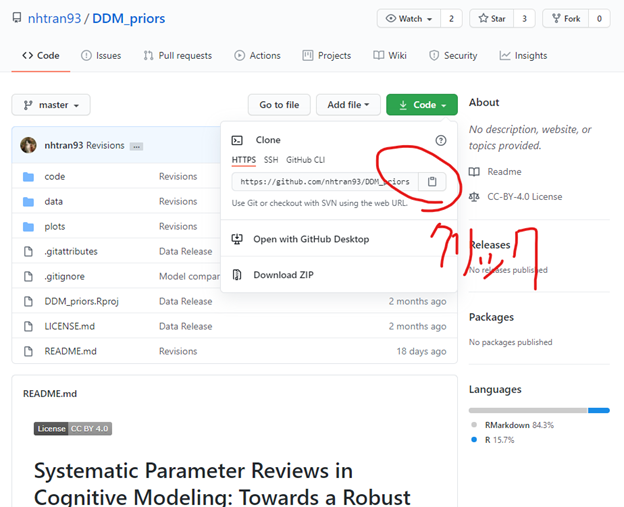
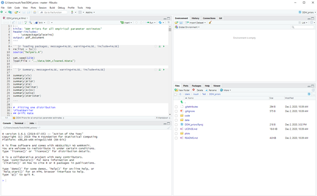
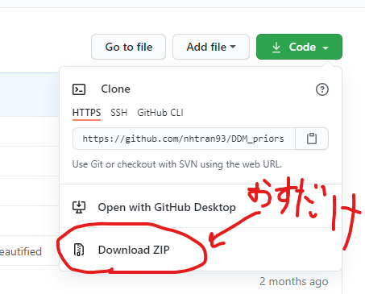

よく来たな、おれはNsushiだ。おまえはGithubを知っているか？その文字を見たことはあるはずだ。だが誰も教えてくれず、おまえはインターネットでそれについて調べていくうちにYOUTUBEにたどりつき、全然関係ない動画を見始めた。気が付くと酒やベイブに溺れ、真の男としての本来の生き方を何もかも忘れて・・・・・自分の頭で考えることすらも・・・・・やめてしまった。
いつからおまえはそんなになってしまったのか？スマッホンの予測変換のせいで、お前の中の真の男は死んでしまったのか？仮にそうだとしても．．．よみがえる。Githubの使い方を教えるこの記事でだ。
真の男のためのマストアイテムGithub
Githubがなんなのかについて、おれは落ちついて説明しておくべきだと思った。Githubはソースコード管理サービスだ。Git (バージョン管理ツール) のhub (中心地)、真の男たちが集まる約束の大地だ。すなわち、いいところだ。おまえはこう思うだろう．．．「ふーん、ギットハブ？よくわからないけどソースコードだのバージョン管理だの、プログラマーが使うものでしょ？」と。おまえはこの時点で百個くらい間違いを犯している。
メキシコにおいて大切なのは情報の取捨選択だが、よくわからないからといって有益な情報をしらないまま生産性のない研究生活をつづけ、そのうちに酒とベイブにおぼれ、刹那的な幸福に包まれ死ぬ…おまえがそれでいいと言うのならおれはとめないが、ここまで導入を呼んでくれたおまえを見捨てるのは忍びないので、できるかぎりのGithubの使いかたをかいておく。
Gitを手にしろ
改めて、そもそもGitとはなんなのか？それはメキシコにおいて銃とはなにか聞くようなものだ。そんな不用意なことをバーできけば、よぱらいにうたれて死ぬ。しかし、さいわいここはGithubについての記事なので、そのようなことはない。おれがこれから伝えようとしているのは、過酷なメキシコを生きるうえでは欠かせない道具の知識だ。
Gitとはおまえと世界をつなぐGUNだ。「世界と自分がつながる？どこで？」そう。Githubでだ。Githubで世界とつながることは、それすなわちメキシコにおける真の男たちの叡智を獲得できるということを意味する。勘のいいおまえは気づいているはずだ。それは、砂漠でみつけたきよいオアシスのように幸福であると。
そのことを知ったおまえはもう銃を持たないこしぬけではいられない。
ここで任意のOSと対応するGitをまずはインスコして真の男になれ。サボテンがとげを光らせるメキシコでサッバイブするにはそうするほかない。
とある真の男
おまえはGitを知り、真の男に一歩近づいた。だが、それは同時に高濃度のメキシコに放り出されたことと同じだ。何もわからないままふらふらとさまよっているとGitの引き金をPullするまえに、おまえは干からびて死ぬ。
過酷なメキシコをいきぬくには、先人の知恵が必要だ。おれはその一部をおまえに紹介する。
2020年9月、真の男N-Han Tran氏の研究チームが「Systematic Parameter Reviews in Cognitive Modeling: Towards a Robust and Cumulative Characterization of Psychological Processes」というタフなペッパーをPreprintとして公開した。Preprint、すなわちそれはむきだしのKnifeだ。そしてN-Han Tran氏は多分性別的には女だが、そんなことは関係ない。真の男は性別などというカテゴリーを超える。
このペッパーの内容は以下の通りだ：「人の心理プロセスを記述したモデル (Drift diffusion model：DDM) のパラメータ推定についての論文。DDMを適用した多数の先行研究から経験的に導き出したパラメータを事前分布として設定することで、よりロバストな計算論モデルを実現するためのモデル設計方法を実践的に紹介している」。すなわち「心理学実験でイイ感じの解析をするやりかたの紹介」だ。
メキシコでの研究活動においては先行研究を概観し、その知見をレンガのように積み重ねていくことが不可欠だ。そして正しく積み重ねることはそのまま研究の再現性にもつながる。その実践的な取り組みの一部がこの論文で紹介されている。この実践をあたまでなくからだにおぼえさせることもまた、おまえのなかのメキシコを養っていくうえでは重要なことだ。
めざといおまえはきづいているはずだ。この実践的な手法をおまえのＰＣ上で再現する方法を。彼女たちは約束の地でおまえの狼煙があがるのをいまかいまかとまっている。引き金をひくときがきた。
Gitの使い方
コマンドプロンプト（Macはターミナル）を開け。Windowsなら「Windows key + R」を押してpowershellと入力すれば出てくる。真の男はショートカットキーをつかいこなす。
左下のWindowsマークを押して、Wの頭文字のファイル覧から「Windows システムツール」をやっとこさ見つけだしてボタンを押し、その中から命からがら「コマンドプロンプト」という文字を見つけたころにはEND OF MEXICO・・・路地裏から出てきたダニートレホの投げナイフが刺さり、おまえの旅は終わりをむかえる。なぜか。ショートカットキーをつかいこなせていないからだ。
とにかくつぎは銃に弾が込められているかを確認しろ。コマンドプロンプト上で
git --versionと入力しろ。git versionほにゃらら、と出力されたらおまえはすでにGUNとともにある。銃をもっていないやつはここで任意のOSと対応するGit、すなわちGUNを手にいれろ。
つぎにコマンドプロンプト上で任意のフォルダを創造し、
mkdir Testその場所に移動する。
cd Testあとは真の男のリポジトリから緑の「Code」ぼたんをおして必要な情報を下画像のようにとりだし（クリックするだけでコピーされる）、

以下のように必要な箇所 (git cloneのあと) にペースト (貼り付け：Ctrl + V) してEnterをおすことで、対象となるGithubのリポジトリをクローンする。つまり、おまえの作成したTestフォルダの中に真の男のたましいがやどる、ということだ。
git clone https://github.com/nhtran93/DDM_priors.gitそれだけだ。あとはおまえの作成したフォルダ（ここではTestフォルダ）を開いて、Rprojファイル（RとRstudioが必須だ）を開けば、おまえはGithubという戦場をいきぬいた真の男たちの軌跡をたどれる。

明日へ…
おまえはいま、銃をてにいれた。このままかえってメキシコ中のGithubのリポジトリをクローンしてもいい、つまり真の男の叡智を手にしてもいい、ということだ。おまえじしんがGithubにとうろくして真の男として叡智を作成してもいい。
実はGithubのリポジトリ上で「Download ZIP」を押して保存する方法もある（下画像）。
こうすればコマンドプロンプトなんて開かずとも真の男の叡智をzipファイルで手にできる。おまえが銃をもたずコロサズを緋村剣心のように貫こうというのならそれもいいだろう。

あとは自分でしこうをさくごし、メキシコを知れ。ドリトスをたべろ。
ここでは扱ってないが、OSFやAsPredictedもおまえのなかのメキシコを養っていく。Open and Reproducible Science Advent Calenderをみろ。そしてドリトスをたべろ。
あるいはOpen and Reproducible Science Advent Calenderにとうろくし、おまえじしんが真の男としてオープンな科学に関係する情報をブロゴの投稿を通して発信する……それもまた、タフな選択なのではないかとおれは思う。